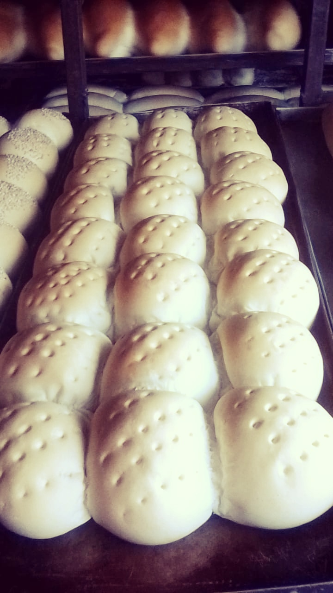
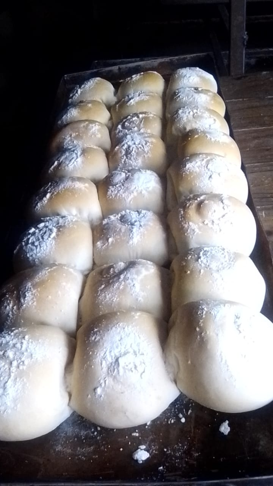
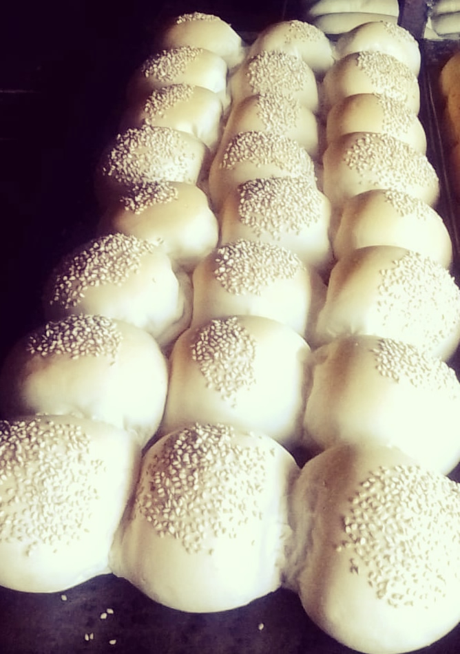

Esta variedad de pan se caracteriza por su forma redonda pero a diferencia de la clasificacion anterior es grande, su venta es de 4 panes por $0.25 de este tambien hay variedad como con ajonjoli, poolveador y de galleta mismo tamaño solo cambia su presentacion.
